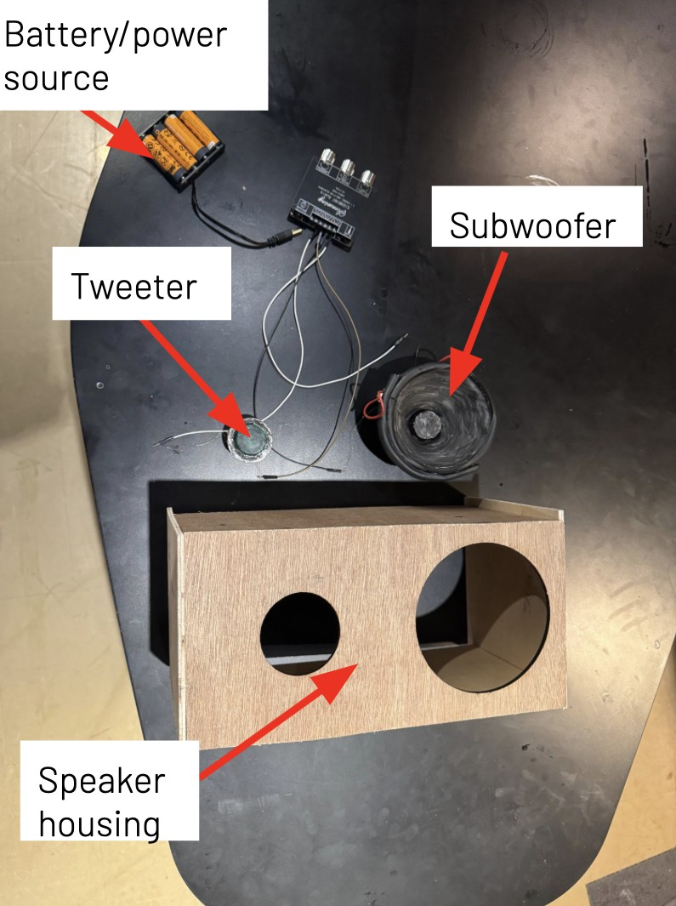
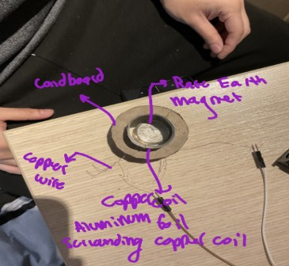
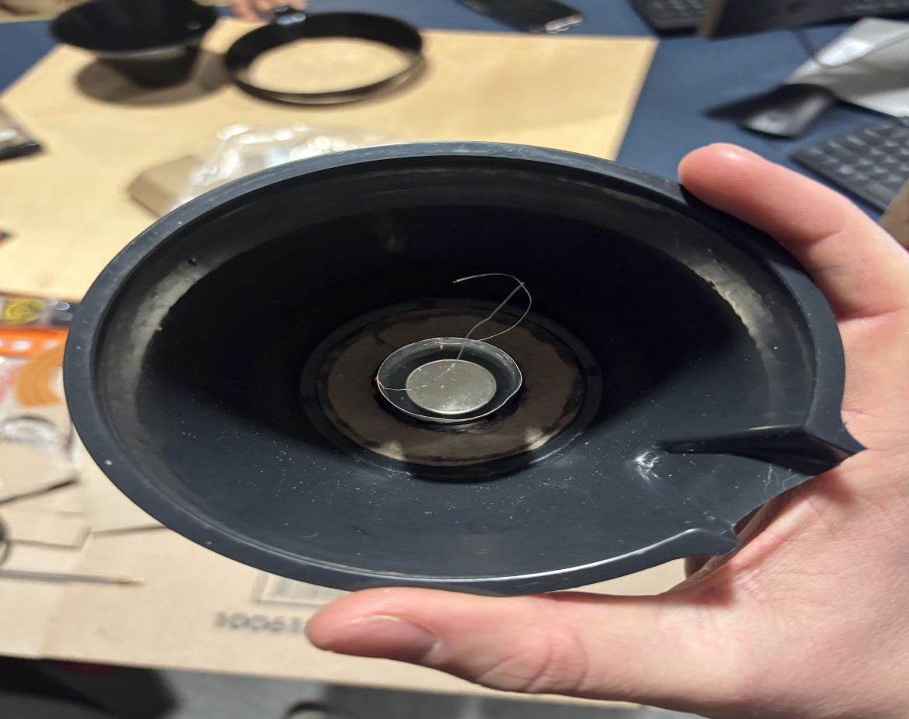
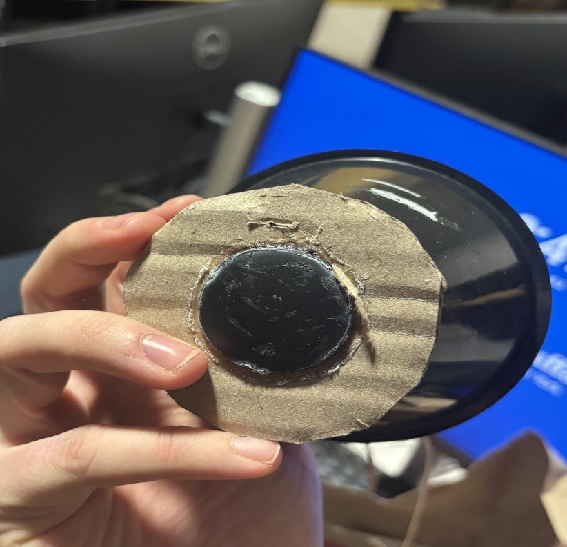
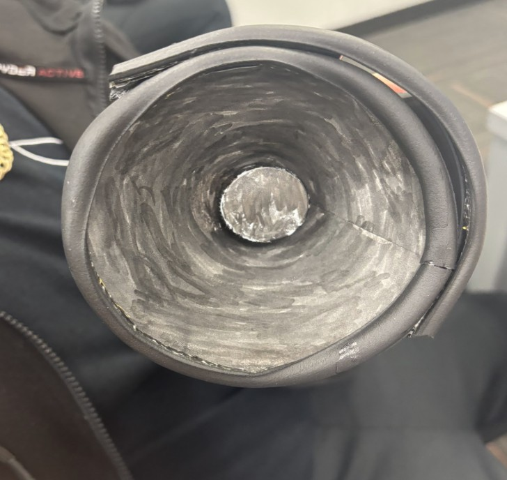
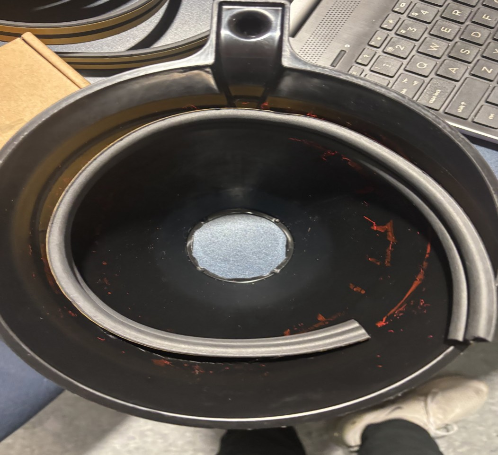
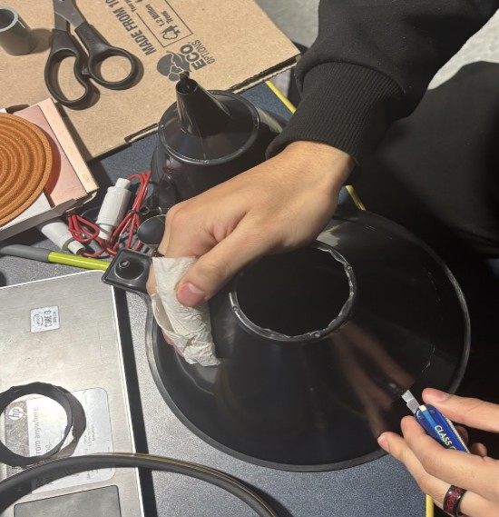
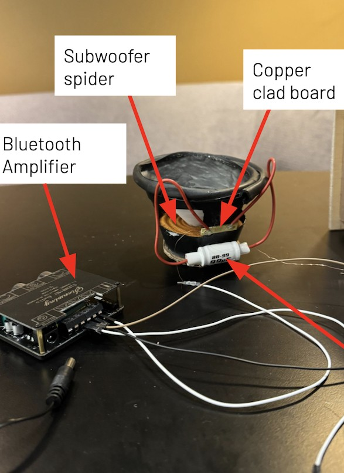
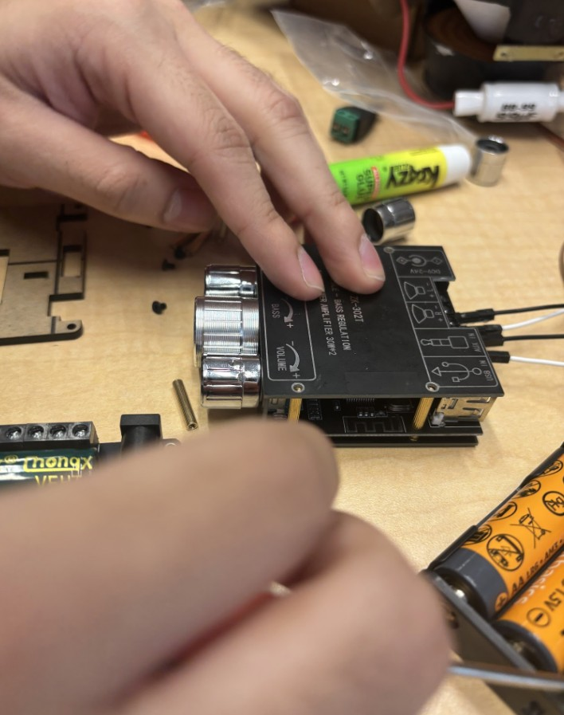

Functional Bluetooth Subwoofer Speaker
A hand-built two-way Bluetooth speaker with a custom wooden enclosure, combining a subwoofer and tweeter, a Bluetooth amplifier, and a 3.5mm wired input into a single working audio system.

Overview
This project was a hands-on exploration of audio electronics and woodworking, built between January and May 2025. The goal was to design and assemble a functional two-way Bluetooth speaker from individual components — a subwoofer, a tweeter, a Bluetooth amplifier module, and a 3.5mm wired audio input — housed in a custom-fabricated wooden enclosure.
Rather than assembling a pre-built kit, I built the speaker from individual components and fabricated the wooden enclosure from scratch. In the machine shop, I measured, cut, drilled, and sanded each panel before assembling the enclosure and installing the electronics.
Mechanics
Before assembling the speaker, I learned how a dynamic speaker converts electrical signals into sound. An alternating electrical signal passes through a voice coil located within the magnetic field of a permanent magnet. The changing magnetic force causes the voice coil and attached cone to move back and forth, creating pressure waves that we hear as sound.
Understanding this operating principle helped me better understand how the subwoofer and tweeter function together, and why proper wiring and driver placement are important for sound quality.

Building the Driver
I built the low-frequency driver's cone and magnet assembly by hand. A rare-earth magnet was placed into a cap, which was then attached to the cone base using superglue to create a secure, rigid bond between the two components. For a second driver, I created an additional cone using layered paper, shaped and reinforced, then colored with sharpie to finish the surface.



Building the Wooden Enclosure
The enclosure was fabricated in the machine shop from raw wood stock. I measured the subwoofer's inner circumference to accurately cut and fit rubber piping around the driver's edge, which helps seal the enclosure and control how the driver moves. I also cut access holes into the subwoofer housing to route wiring and mount the tweeter and internal electronics.
Fabrication involved cutting the enclosure panels to size, drilling mounting holes for the drivers and hardware, and sanding all surfaces smooth before final assembly — giving me hands-on machine shop experience beyond just the electronics side of the build.


Installing the Drivers & Amplifier
With the enclosure and drivers ready, I installed and wired the full electronics chain: the subwoofer and tweeter, a Bluetooth amplifier module, a filter, a copper clad board, and the battery/power source, along with a 3.5mm input for wired playback. The amplifier's volume controls were mounted directly to the enclosure for easy access.
Wiring the system required connecting each driver to the amplifier through the appropriate filter components, ensuring the subwoofer and tweeter each received the correct frequency range, and routing the power supply cleanly through the enclosure.


Testing & Results
Once assembled, I tested the speaker using both the 3.5mm wired input and Bluetooth wireless playback to confirm the amplifier, drivers, and wiring all worked correctly together. Both playback modes produced clear audio output, validating the full electronics chain from the power source through the amplifier and into the subwoofer and tweeter.
Building this project end-to-end — from understanding the underlying physics of how a driver produces sound, to fabricating the enclosure, to wiring the final electronics — gave me a much more complete picture of how consumer audio products are actually built, beyond just using them.